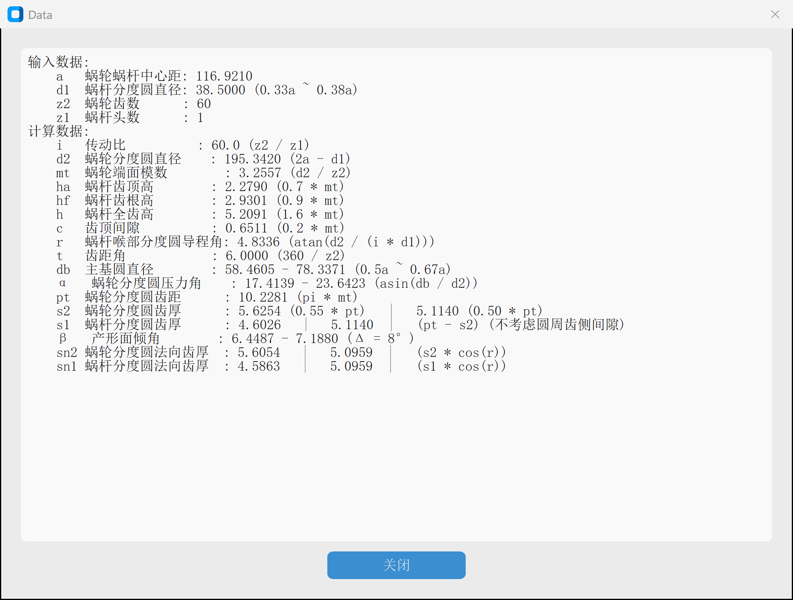
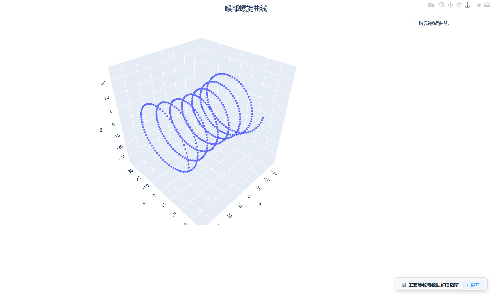

4.1 工件轴向截面计算
工件轴向截面计算 由输入的砂轮截形 .dxf 模拟磨削运动，计算包络蜗杆轴向截面理论轮廓与喉部空间螺旋线，并提供独立的一键 计算工件数据 速算窗口。
一、输入参数说明
| 参数名称 | 示例值 (Sample_C_117) |
说明与条件显隐 |
|---|---|---|
蜗杆类型 |
锥面 |
选 平面 时自动展开 偏移角、偏移距离、中心偏移角度（默认 100）；选 锥面 时自动隐藏。 |
中心距 |
116.921 mm |
蜗轮蜗杆理论中心距 。 |
蜗杆喉部直径 |
38.5 mm |
蜗杆喉部基准分度圆直径 。 |
蜗轮齿数 |
60 |
配对蜗轮齿数 。 |
砂轮安装倾角 |
3.393 ° |
砂轮安装角；右侧实时计算标准喉部分度圆导程角（如 4.8336°），勾选复选框可自动回填。 |
砂轮直径 |
460.0 mm |
当前用于模拟切削的砂轮直径。 |
砂轮分度圆齿顶高 |
3.02 mm |
必须与 齿型文件地址 所选砂轮截形（如 锥面廓形 中的 中径齿顶高）保持一致。 |
蜗杆计算齿数 |
7 |
模拟计算的蜗杆齿数；齿数越多越利于分析两侧边缘齿误差，但计算耗时略增。 |
齿型文件地址 |
conical_23.5.dxf |
点击 选择文件 选入砂轮截面 .dxf 文件。 |
保存文件 |
axial_section.dxf |
指定生成的理论蜗杆轴向截形 .dxf 输出路径。 |
二、快速辅助功能：计算工件数据
点击青绿色按钮 计算工件数据，无需等待仿真即可秒级弹出完整传动与齿形几何参考表（以下为 Sample_C_117 真实计算窗口与数值）：

- 核心自动推导公式：
- 蜗轮分度圆直径 ，端面模数 ；
- 推荐齿顶高 、齿根高 、全齿高 、顶隙 ；
- 主基圆范围 及对应分度圆压力角 、产形面倾角 、蜗轮/蜗杆齿厚参考范围。
三、点击 生成工件截面曲线 的输出结果
点击底部 生成工件截面曲线 后，软件在目标目录同时产出 3 个文件：
<名称>.dxf&<名称>.html（2D 蜗杆轴向截形）：包含7个工作齿槽完整轴向投影（Sample_C_117共 14,837 个离散点）与闭合过渡包络弧。

<名称>-helix-3d.html（3D 喉部螺旋曲线）：展示提取的喉部空间螺旋滚道曲线，并在右下角信息卡附加模拟滚道计算拟合出的实际喉部分度圆导程角（Sample_C_117实算拟合结果-4.9498°，即导程角绝对值约4.95°）。
